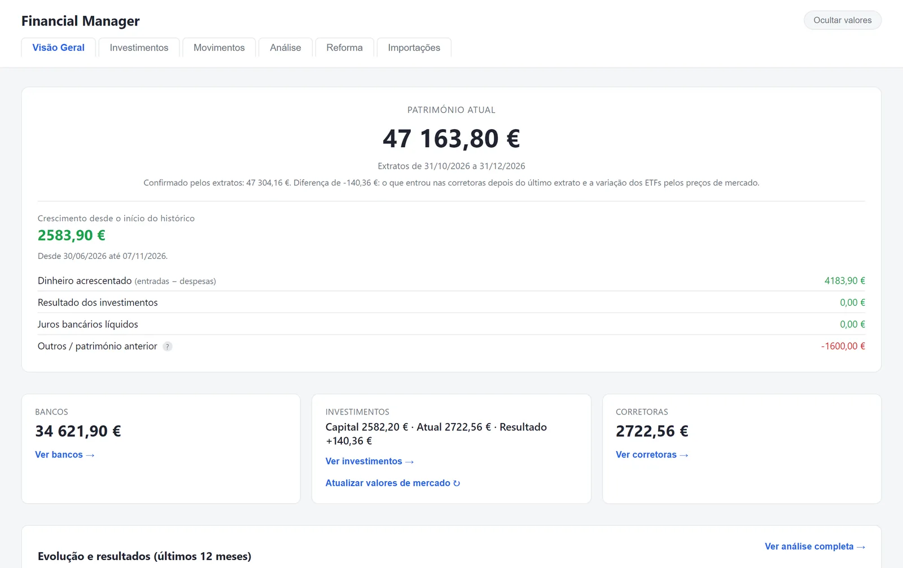
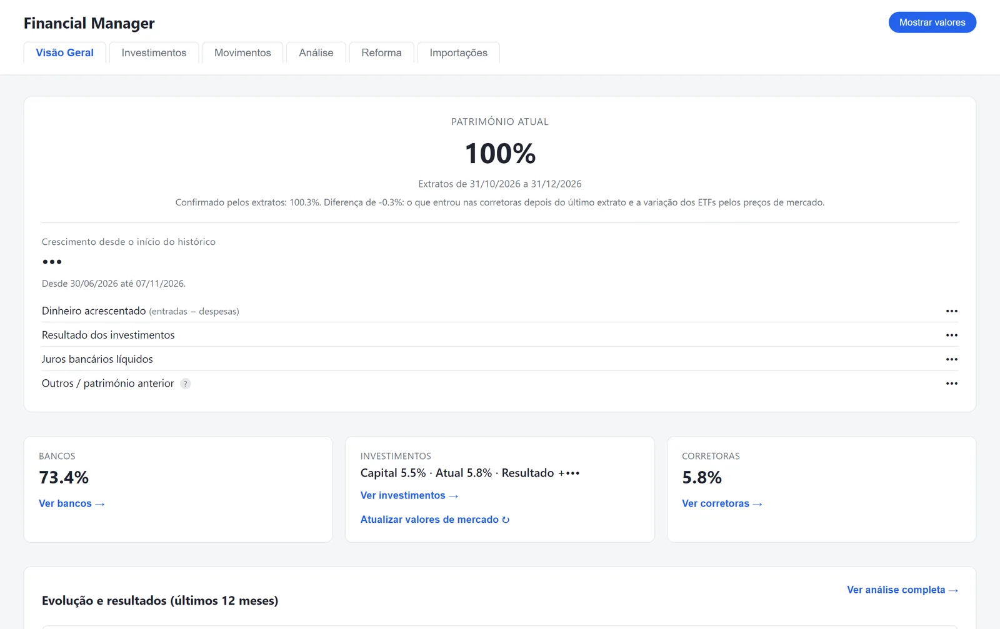
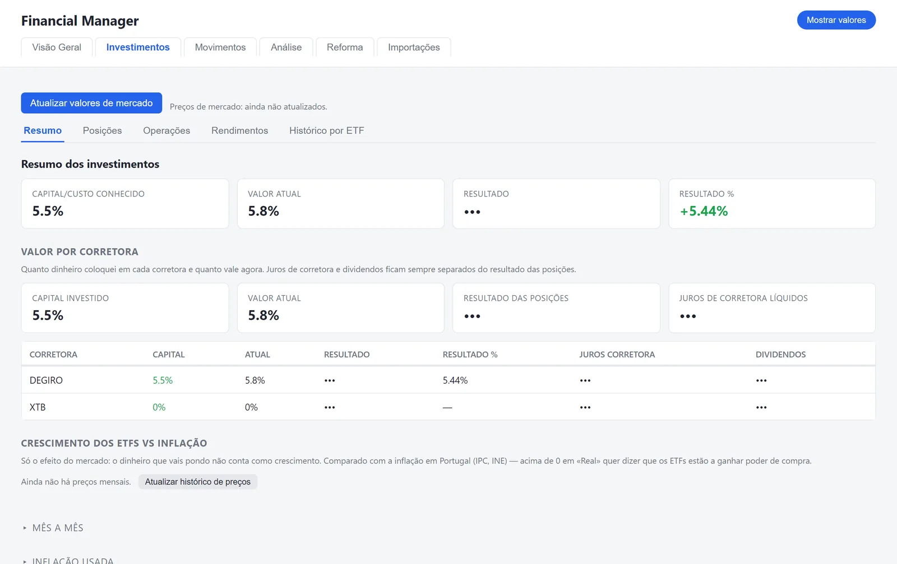
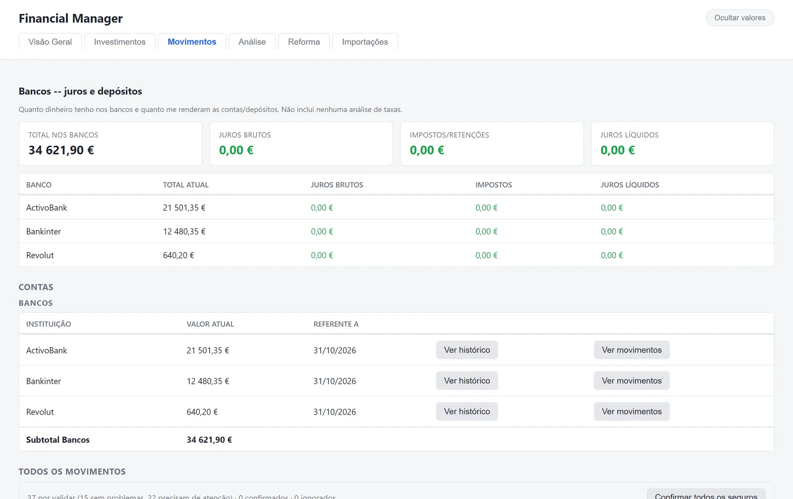
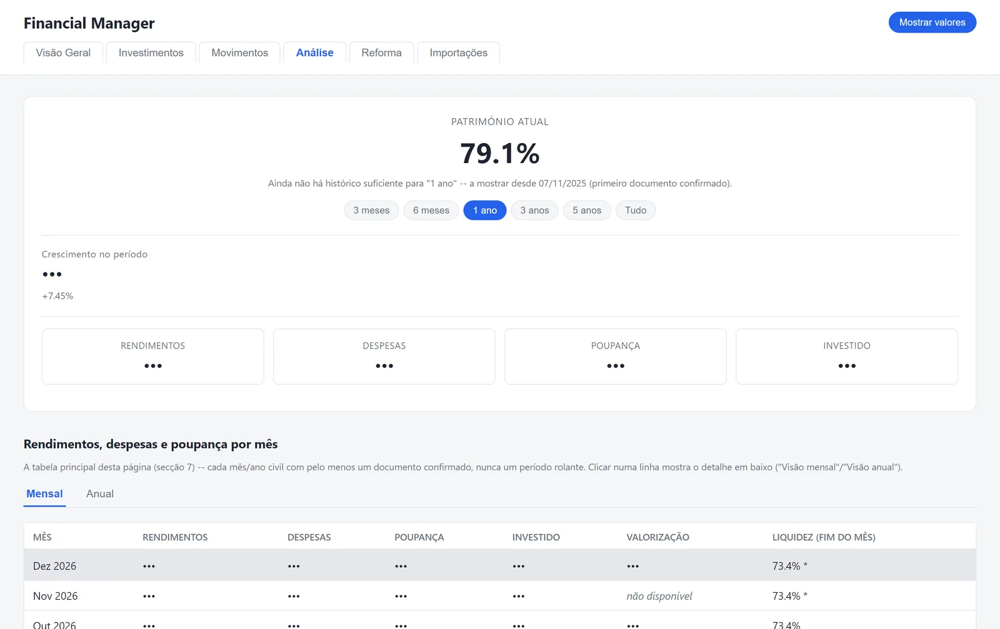

Statements, not spreadsheets
Import PDF, CSV and Excel statements in bulk; the app detects the institution, reads the balance and the movements, and asks for confirmation.
PERSONAL FINANCE · IN DEVELOPMENT
Bank and broker statements in, a clear picture out.
A local app that reads statements from banks and brokers, confirms each value with the user and builds a history of wealth, income, spending and investments. Everything stays on the computer, in a local database.
Import PDF, CSV and Excel statements in bulk; the app detects the institution, reads the balance and the movements, and asks for confirmation.
Positions, results and monthly evolution, with banks and investments shown separately.
One click hides the amounts and shows percentages instead — useful for demos and screen sharing.
Screenshots
All amounts, bank movements and investments below are invented demo data.





The app is used privately and has no public download. Its data never leaves the computer.